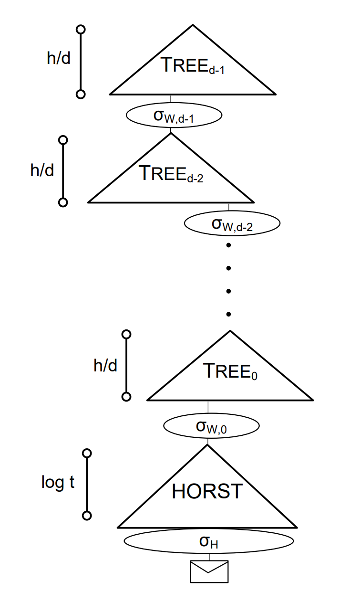

SPHINCS
SPHINCS 于 2015 年由 Bernstein, Daniel J., Daira Hopwood, Andreas Hülsing 等人提出，具体的论文见 SPHINCS: practical stateless hash-based signatures。
SPHINCS 是一个无状态的签名系统。有状态指的是每次签名时需要记录系统的信息，比如是第几次签名，在验证的时候需要使用该参数，而无状态的签名系统则不需要保存这些信息。相对于有状态的签名系统，无状态的签名系统不需要记录签名的状态，符合标准的 API 且方便在不同主机上移植，无状态的签名系统是更好的选择。
SPNHICS 基于多种签名算法，比如 WOTS+, HORST 等，如果不了解相关内容，建议先参考之前的文章。
SPHINCS 的结构大致如下：
每一个层的 Tree 都是一个 binary hash tree，叶子节点是 WOTS+ 公钥通过 L-Tree 形成的根节点，这里的密钥对用来认证，最下面的 HORST 用来签名消息。
SPHINCS 中使用 address scheme 来进行伪随机密钥的生成，一个地址(address) 由三个部分组成：
其中，Tree 部分的层数，从上到下，依次是 $d-1,d-2, \dotsm, 0$，HORST 属于 $d$ 层。
下面通过 $(GEN, SIG, VER)$ 三部分进行讲解。
密钥生成 (GEN)
$$(SK, PK) \leftarrow GEN(1^k)$$
首先，在 SPHINCS 中存在下面的几个参数:
| paramter | meaning |
|---|---|
| $n$ | biglength of hashes in HORST and WOTS |
| $m$ | bitlength of the message hash |
| $h$ | height of the hyper-tree |
| $d$ | layers of the hyper-tree |
| $w$ | Winternitz parameter used for WOTS signatures |
| $t$ | number of secret-key elements of HORST |
| $k$ | number of revealed secret-key elements per HORST sig. |
在 $SPHINCS-256$ 中，分别为
$$n=256, m = 512, h=60,d=12,w=16,t=2^{16},k=32$$
由 PRG 生成两个随机数作为私钥：
$$(SK_1, SK_2) \in \{0, 1\} ^ n \times \{0,1\}^n$$
$SK_1$ 用来生成密钥，$SK_2$ 在签名的时候用来生成不可预测的 $index$ 和随机化消息的哈希值。
然后生成 $p$ 个随机数作为掩码
$$Q = (Q_0, Q_1, \dotsm, Q_{p-1}) \leftarrow \{0, 1\} ^{p\times n}$$
且 $p$ 满足
$$ p = \max\{2^w-1, 2(h+\lceil \log l \rceil), 2 \log t\}$$
并且设
$$\begin{aligned}
Q_{WOTS+} &= (Q_0, Q_1, \dotsm, Q_{2^w-2})
\\
Q_{HORST} &= (Q_0, Q_1, \dotsm, Q_{2\log t-1})
\\
Q_{L-Tree} &= (Q_0, Q_1, \dotsm, Q_{2\lceil \log l \rceil-1})
\\
Q_{Tree} &= (Q_{2\lceil \log l \rceil},Q_{2\lceil \log l \rceil+1}, \dotsm, Q_{2(h+\lceil \log l \rceil)-1} )
\end{aligned} $$
即 $Q_{WOTS+}$ 为 $Q$ 的前 $2^w-1$ 个， $Q_{HORST}$ 为 $Q$ 的前 $2 \log t$ 个，$Q_{L-Tree}$ 为前 $2\lceil \log l \rceil$ 个，$Q_{Tree}$ 为 $Q_{L-Tree}$ 随后的 $2h$ 个。
最后，我们需要生成最上层的 Tree，也就是 layer d-1 的树。叶子节点为 WOTS+ 密钥对，通过上述的 address scheme 计算叶子节点的地址：
$$A = (d-1||0||i), i \in [0, 2^{h/d}-1]$$
随后可以计算出对应的随机数种子：
$$S_A \leftarrow \mathcal{F_a}(A, SK_1)$$
此处，将 $\mathcal{F_a}$ 认为是一个哈希函数即可。
然后我们就可以生成对应的公钥了
$$pk_A \leftarrow WOTS.kg(S_A, Q_{WOTS+})$$
生成的 $$pk_A$$ 由 $l$ 个 $blocks$ 构成，将其构造成一个 L-Tree，根节点就是在 Tree 上的叶子节点值。
就这样，我们可以获取到 $Tree_0$ 的根节点值 $PK_1$。
从而，SPHINCS 的公私钥为：
$$
\begin{cases}
SK = (SK_1, SK_2, Q)
\\
PK = (PK_1, Q)
\end{cases}
$$
图示：

消息签名 (SIG)
$$\Sigma \leftarrow sign(M,SK)$$
对于输入的 $M\in \{0, 1\}^*, SK = (SK_1, SK_2,Q )$ ，首先计算消息的随机摘要，利用 $M,SK_2$ 生成一个随机数
$$R = (R_1, R_2) \in \{0, 1\}^n \times \{0,1\}^n \leftarrow \mathcal{F}(M, SK_2)$$
取 $R_1$ 计算消息的随机摘要：
$$D \leftarrow \mathcal{H}(R_1, M)$$
取 $R_2$ 的前 $h$ bits 选择 HORST 密钥对
$$i \leftarrow C_{HOP}(R_2,h)$$
因为树高 $h$，$h$ bits 包含 $2^h$ 个数，正是 HORST 的数量。
已知 $i$ 之后，我们可以计算该 HORST 的地址
$$A_{HORST} = (d || i(0, (d-1)h/d)||i((d-1)h/d,h/d))$$
其中， $i(start, length)$ 表示从 $start$ 比特位开始，截取 $length$ 长度的比特值。
同理，计算出对应的随机数种子：
$$S_{HORST} \leftarrow \mathcal{F_a}(A_{HORST}, SK_1)$$
根据随机数种子和掩码 $Q$，我们可以获取到：
$$(\sigma_H, pk_H) \leftarrow HORST.sign(D, S_{A_{HORST}}, Q_{HORST})$$
对于 layer $j, j \in [0, d)$，计算 WOTS+ 密钥对的地址：
$$A_j = (j || i(0, (d-1-j)h/d) || i((d-1-j)h/d,h/d))$$
计算出地址之后，求出对应的随机数种子
$$S_{A_j} = \mathcal{F_a}(A_j, SK_1)$$
然后计算签名：
$$\sigma_{w,j} \leftarrow WOTS.sign(pk_{w,j-1}, S_{A_j}, Q_{WOTS+})$$
$pk_{w,j-1}$ 就是 Tree 的根节点，这里取 $\sigma_{-1} = pk_H$，也就是 HORST 的根节点，同时，我们还需要求出 WOTS+ 密钥对的认证路径 $Auth_{A_{d-1}}$。
最后得出，签名为：
$$\Sigma = (i, R_1, \sigma_H, \sigma_{W, 0}, Auth_{A_0}, \dotsm, \sigma_{W,d-1}, Auth_{A_{d-1}})$$
图示：

消息校验 (VER)
$$b\leftarrow VEF(M,\Sigma, PK)$$
对于消息 $M\in \{0,1\}^*$ 计算出摘要 $D \leftarrow \mathcal{H}(R_1, M)$。
然后首先校验 $\sigma_H$：
$$pk_H \leftarrow HORST.verify(D, \sigma_H, Q_{HORST})$$
如果校验没通过，返回失败，否则进行下一步。
计算 WOTS+ 的公钥
$$pk_{W,0} \leftarrow WOTS.verify(pk_H, \sigma_{w,0}, Q_{HORST})$$
公钥共 $l\ blocks$，形成 L-Tree，计算出根节点，结合 $Auth_{A_0}$ 计算出 Tree 的根节点。
对于 layer 1~d-1，也是类似的操作，最后得出最上面的那棵树的根节点 $ROOT_{d-1}$，如果 $PK_1 = ROOT_{d-1}$，那么返回 true，否则返回 false。
图示：

生活杂笔，学习杂记，偶尔随便写写东西。